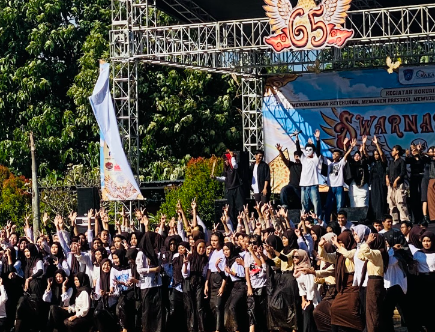

DOKUMENTASI KELAS XII
Kumpulan Momen dan Kegiatan Kebersamaan Siswa XII TJKT 2

Foto Pembuatan Ijazah
Momen foto bersama dan persiapan kelengkapan administrasi ijazah kelulusan kelas XII.

Peringatan Hari Pramuka
Kegiatan dan partisipasi siswa dalam peringatan Hari Pramuka bersama keluarga besar sekolah.

Perayaan HUT Sekolah
Keseruan dan kemeriahan kelas XII TJKT 2 dalam memeriahkan hari ulang tahun sekolah.

Lomba Menghias Tumpeng
Ajang kekompakan dan kreativitas siswa dalam lomba kreasi menghias tumpeng.